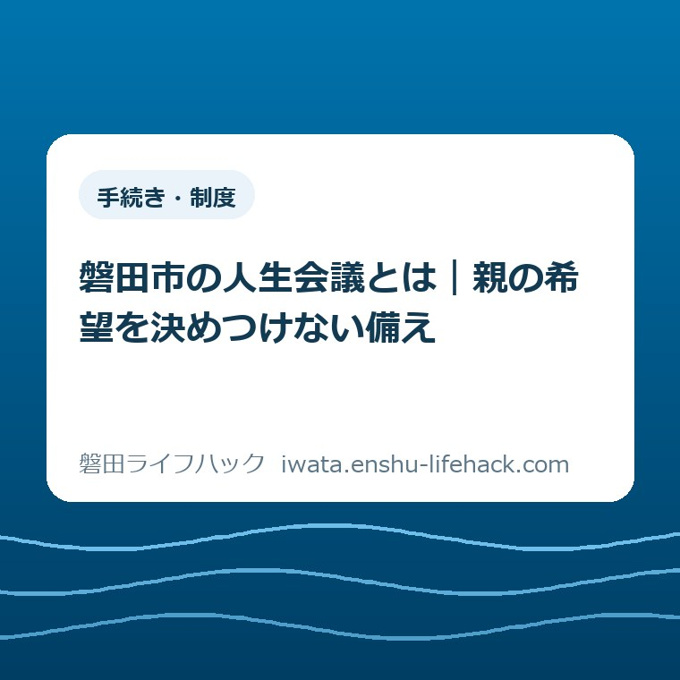
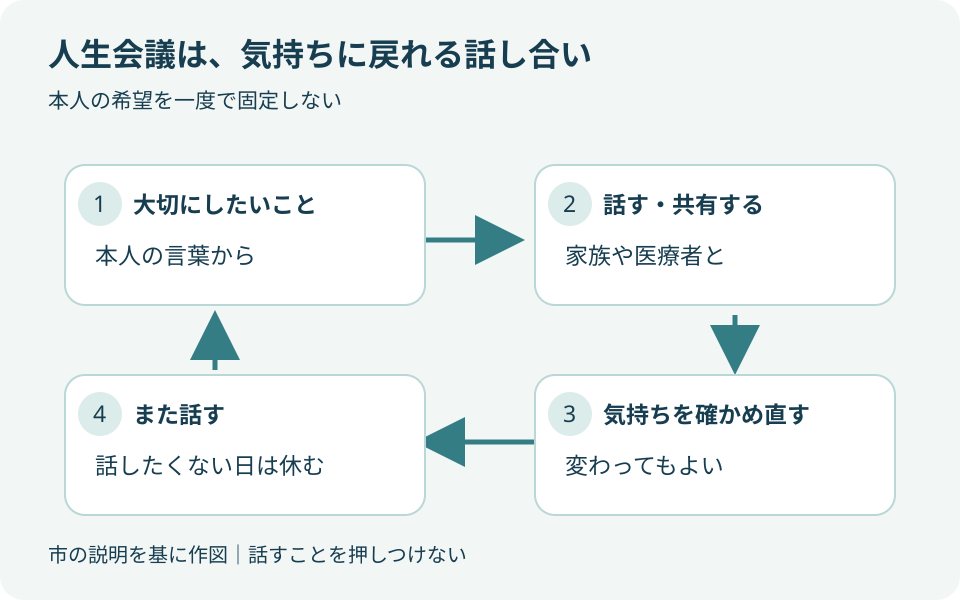
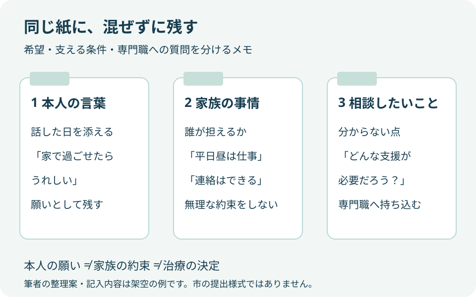

更新：2026.10.04 手続き・制度
磐田市の人生会議とは｜親の希望を決めつけない備え

Q. 親の今後が気になるけれど、人生会議では何を聞けばいい？
A. 医療やケアの選択は本人の状態や個別条件で変わります。磐田市が案内する人生会議は、望む医療やケアを前もって考え、家族や医療者と繰り返し共有する取り組みです。親の答えを一度で決めず、今日は大切にしたいことを一つメモするところから。2026年10月31日に市の講座が予定されています。最新情報は市公式ページで確認してください。
親を支える家族は、話す前から手間を払っている
医療やケアの選択、利用できる制度は、本人の状態や個別条件で変わります。この記事だけで治療や介護の方針は決められません。大石浩之（磐田市／不動産業）が、磐田市の公表情報を基に、親の希望を決めつけずに聞くための準備を考えます。
通院に付き添うために仕事を調整する。離れて暮らす親へ電話をかける。薬や食事のことを気にかけ、きょうだいにも連絡する。親の先行きが心配な家族は、話し合いを始める前から、時間と気力を使っています。そこへ「家族でよく話してください」とだけ言われても、何から聞けばよいのか迷うはずです。
私は、準備が進まない理由を家族の関心の薄さに求めたくありません。聞けば親が傷つくかもしれない。仕事の合間に切り出して、途中で電話を切るのもためらう。そうした迷いまで含めて、暮らしの段取りです。この記事では、立派な会議を開くことを出発点にしません。
今日の一歩は「大切にしたいことを一つメモする」です。親に尋ねる準備ができていなければ、まず自分が大切にしたいことでも構いません。ただし、自分が書いた希望を親の希望に置き換えない。その線を引いておくことから始めます。
磐田市の人生会議とは、希望を繰り返し共有すること
磐田市「在宅医療・介護連携推進事業」は、人生会議を、本人が望む医療やケアについて事前に考え、家族や医療機関などと話し合って共有する取り組みと説明しています。正式にはACP（アドバンス・ケア・プランニング）です。2026年9月25日更新のページを、9月28日に確認しました。
私が着目するのは、市の説明に「繰り返し」が入っている点です。会議という名前から、一度集まって結論を出す場を想像するかもしれません。しかし、人生会議は一回の決定だけを指すものではありません。話した後も気持ちを確かめ直すことが、最初から含まれています。
厚生労働省の人生会議の普及・啓発リーフレットも、気持ちは変化すること、知りたくない、考えたくない人への配慮が必要なことを示しています。医療やケアについて考えることを、本人の意思に反して押しつけないという前提があります。
ここからは私の提案です。親が以前話した内容を覚えていても、「前にこう言っていたから」と話を終わらせず、今も同じ気持ちか確かめる余地を残します。記録を残す目的は、昔の言葉を守らせるためではなく、今の本人を理解する材料にするためです。

親に何を聞くか迷ったら、生活の言葉から始める
人生会議の入口として、磐田市は「大切にしたいこと」から話す方法を案内しています。医療の用語を覚えてからでなくても、普段の暮らしについて尋ねるところから考えられます。ここで示す会話は筆者の作例であり、実際の相談者の発言ではありません。
例えば「これからも続けたいことはある？」と聞く形です。「家にいたい？」の二択よりも、食事、会いたい人、過ごし方など、本人が話したい方向へ広げられます。何を答えるかを家族が先に決めないために、最初の問いを狭くしすぎないようにします。
「家族に迷惑をかけたくない」と返ってきた場合も、特定の治療を望まない意味だと読み替えません。「どんなことが気になっている？」と聞けるなら、本人の言葉をもう少し待ちます。費用なのか、送迎なのか、仕事を休ませることなのかは、その一言だけでは分からないからです。
答えが短くても、家族の説明で空白を埋める必要はありません。「今は思いつかない」という返答なら、そのまま受け止める。その日に何も決まらなくても、話してよい話題だと共有できたなら、私は準備の一つと考えます。沈黙を同意として扱わないことも、聞き方の一部です。
聞く時間を選ぶことも家族側の工夫です。本人が疲れているときに質問を重ねず、「今日はこの話をしてもよい？」と入口を確かめる方法があります。途中でやめたいという反応があれば、そこで区切る。これは筆者の提案で、全員に同じ順番を求める手順ではありません。
共有メモは「本人の言葉」と「家族の事情」を分ける
人生会議の記録は、本人が話した希望と、家族が支えられる範囲を分けて残すと、行き違いを見つけやすくなります。以下は私が提案する整理の形です。市の提出書類でも、医療上の指示書でもありません。紙一枚やスマートフォンのメモに書くことを想定しています。
最初の欄には、話した日と本人の言葉を書きます。「家で過ごせたらうれしい」と話したなら、その表現を残します。「在宅療養に決定」と家族が強い言葉へ変えないことです。願いとして話した言葉と、説明を受けて決めた内容は、同じものとして記録しません。
次の欄には、家族の事情を書きます。「平日の昼は仕事で付き添えない」「通院の連絡は引き受けられる」など、できる範囲を具体的にします。本人の希望を聞くことは、家族がすべて実行すると約束することではありません。支える側の生活も、相談に持っていく材料です。
最後の欄には、専門職に確認したいことを置きます。「自宅で過ごす場合、どんな支援が必要か」「今の状態では何を説明してもらうべきか」といった質問です。家族が答えを推測して欄を埋めるより、分からない点が見えるほうが相談につながります。
| 欄 | 残す内容 | 混ぜないもの |
|---|---|---|
| 本人の言葉 | 日付／本人が大切にしたいこと | 家族による治療方針の推測 |
| 家族の事情 | 誰が何を担えるか／難しいこと | 本人も同じ考えだという決めつけ |
| 相談したいこと | 医療者や相談員に聞く質問 | 確認していない実現の約束 |
メモを共有する相手も、可能な範囲で本人と確かめます。家族全員の連絡グループへ、そのまま送ることだけが共有ではありません。誰に何を伝えるかを話せるなら先に聞く。気持ちの記録には、本人が広めたくない内容が含まれる場合もあるためです。

家族だけで医療やケアの答えを背負わない
磐田市は、これからの生き方を考えたいときの相談先として、かかりつけ医や地域包括支援センターを案内しています。人生会議は家族の中だけで完結させる必要はありません。本人の希望と、実際に選べる医療や支援をつなぐには、専門職からの説明も必要です。
磐田市「地域包括支援センター」では、高齢者本人に加え、家族などの介護の悩みも相談対象として示しています。担当地区はセンターごとに分かれています。市の一覧で親が住む地区を確認し、相談先を選ぶ形です。この記事では医療や介護の利用可否を個別に判断しません。
相談の入口を探す際は、当サイトの介護の相談先の案内も使えます。専門的な言葉で状況をまとめるより、「親の希望をどう聞けばよいか迷っている」と説明するための入口として考えてください。必要な支援や相談の進め方は窓口で確かめます。
きょうだいで受け止め方が違う場合、誰が親を理解しているかの競争にしたくありません。私は、聞いた日、聞いた言葉、まだ本人に確認していない点を分ける方法を提案します。別の日に別の話をしていた可能性もあります。家族の多数決だけで本人の希望を決める進め方は避けたいところです。
親が十分に言葉で伝えられない状況でも、家族一人が正解を出すよう抱え込む必要はありません。分かっていることと分からないことを分けて、担当する医療・ケアの専門職へ相談してください。過去の発言をどう扱うかも含め、具体的な場面の判断をこの記事の例文で代用しないでください。
2026年10月31日、かたりあで人生会議講座
磐田市は、2026年10月31日（土曜）14時～15時30分に、磐田市民文化会館「かたりあ」スタジオRで人生会議講座を予定しています。開場は13時30分です。2026年9月28日に確認した市の案内では、申込は公式ページのフォームまたは市の担当課への電話とされています。
| 日時 | 2026年10月31日（土曜）14時～15時30分 |
|---|---|
| 開場 | 13時30分 |
| 会場 | 磐田市民文化会館「かたりあ」スタジオR |
| 申込方法 | 市公式ページの参加申込フォーム、または市の担当課へ電話 |
講座は、看取りの体験から最期の迎え方を学ぶ内容と、年金・医療・相続などの備えを考える内容で構成されています。親本人の希望を聞くための学びの機会として紹介します。講座への参加だけで、家族の個別の医療や相続の答えが決まるわけではありません。
参加を考える方は、市公式「在宅医療・介護連携推進事業」の「考えるきっかけに」から最新案内を開いてください。申込の受付状況、定員、費用、期限などは、本記事で未確認のため断定しません。開催予定も変更される場合があります。
親と一緒に出かけるかどうかは、本人の気持ちを確かめてからで構いません。「勉強になるから」と予定だけ入れると、話す準備ができていない親には負担になるかもしれません。私は、講座の存在を知ることと、参加を決めることを分けてよいと考えます。
良い点と、注文したい点
磐田市の人生会議の案内で良い点は、暮らしの希望から話し始められることと、家族の外にも相談先が示されていることです。医療の知識を持つ人だけの話にせず、「大切にしたいこと」を入口にする点を、私は評価します。講座という学ぶ機会があることも、切り出し方に迷う家族の選択肢になります。
繰り返し共有するという説明も、家族にとって支えになると私は考えます。最初の話し合いで答えをそろえなければならないと思うと、会話を始める敷居が上がるからです。考えが変わっても確かめ直せると分かれば、未完成の言葉を残しておく意味が見えてきます。
注文したい点は、家族が聞き役を担う負担への案内です。市の説明を家庭へ持ち帰る人は、日々の通院や連絡も担っているかもしれません。私としては、「本人が話したくない場合」「家族同士で受け止めが違う場合」に、どう相談へつなげるかを入口で見つけやすくしてほしいと思います。
これは市の職員個人への注文ではなく、案内の届き方についての意見です。家族に話し合いを求めるなら、その家族が困ったときに話を戻せる先も見せてほしい。講座の開催を知ることと、日常の迷いを相談できることがつながると、備えを一人の仕事にせずに済みます。
大石の視点：聞くことと、答えを出させることは違う
私は、親の希望を聞くことと、親に答えを出させることは違うと考えます。まだ決めない自由は、備えを放棄することではありません。何を大切にしているかが一つ分かったなら、その日の準備として十分です。ここは実際の相談体験の紹介ではなく、私の判断です。
一方で、どこまで待つのがよいのか、私にも迷いがあります。家族の不安が強いときは、何かを決めて安心したくなるでしょう。それでも、家族が安心するための結論を、本人の希望として記録することはできません。迷う部分を専門職に持っていくほうを、私は選びたいと思います。
不動産の話に引き寄せて、家を売るか残すかまで一度に決める必要もありません。本人がどんな暮らしを望むかと、家の管理や費用をどうするかは関連しますが、問いは別です。実家の管理も気になる方には、空き家相談会へ持っていく家族のメモで、困りごとと希望を分ける考え方を紹介しています。
家の扱いを調べる段階になったら、空き家・実家じまい・相続した家の案内へ進めます。ただし、人生会議で暮らしの希望を話したことを、売却や相続手続きへの同意として扱わないでください。財産の手続きに必要な確認は、別に専門家へ相談する話です。
対案・結論：今日は大切にしたいことを一つメモする
人生会議の準備として今日できる一歩は、大切にしたいことを一つメモすることです。親の考えをまだ聞いていなければ、自分の考えとして書き、本人の欄は空けておきます。本人が話してくれたなら日付と言葉を残します。どちらも、家族の想像を本人の希望にしないための書き分けです。
メモの完成度を上げるために、質問を次々に増やす必要はありません。一つの希望から、分からないことが見えてくれば十分です。話すのが難しいと感じた部分は、そのまま相談の材料になります。家族がすでに担っている仕事へ、完璧な会議の準備をさらに積み上げないことを、私は勧めます。
通院の移動方法を親と話すときは、お助け号の行き先と2026年7月の施設変更を確認し、いつもの通院先が利用路線の対象かを一つ照合するところから始められます。
人生会議についてのよくある質問
人生会議で迷いやすい入口を三つに分けました。回答は家庭で話を始めるための案内です。個別の医療やケアの判断は、本人の状態を把握する専門職に確認してください。
親に何から聞けばよいですか？
医療の方法を二択で尋ねる前に、大切にしたい暮らしについて聞くのが入口です。「これからも続けたいことはある？」などの言葉から、本人が話せる範囲で聞きます。答えを家族が補わず、話した日と言葉をメモに残す方法があります。具体的な医療やケアの選択は、かかりつけ医などの説明を受けて考えてください。
親が話したくないと言ったら、どうしますか？
その場で結論を求めず、話を区切って構いません。厚生労働省も、知りたくない、考えたくない方への配慮を示しています。親の沈黙を同意とせず、家族の不安は家族の相談として分ける方法があります。話し方や支え方に迷う場合は、かかりつけ医や、親が住む地区を担当する地域包括支援センターに相談してください。
磐田市の人生会議講座はいつ、どこで開かれますか？
2026年10月31日（土曜）14時～15時30分、磐田市民文化会館「かたりあ」スタジオRで開催予定です。開場は13時30分。市の案内では公式ページのフォームまたは担当課への電話で申し込みます。2026年9月28日確認時点の予定なので、受付状況や参加条件を含む最新情報は磐田市公式ページで確認してください。
参考にした公式情報
- 在宅医療・介護連携推進事業／磐田市（2026年9月28日確認）
- 地域包括支援センター／磐田市（2026年9月28日確認）
- 人生会議の普及・啓発リーフレット／厚生労働省（2026年9月28日確認）
最終確認日：2026-09-28。本記事は非公式の案内です。制度・開催予定・数値は変わる場合があります。医療やケアの個別判断は担当の医療者や地域包括支援センターへ、財産の個別手続きは専門家へ相談してください。最新情報は必ず磐田市公式ページで確認してください。